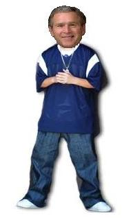

Regaytonero
 De: La Frikipedia, la enciclopedia extremadamente seria.
De: La Frikipedia, la enciclopedia extremadamente seria.
| De la serie tribus urbanas del mundo:
|
| Regaytonero
|
Ejemplo de la tribu

|
| Tipo de persona (o algo así) que canta mierda
|
|
| Hábitat
|
El barrio
|
| Inteligencia
|
nula debido al alcohol y las drogas, es decir, es la tribu más anormal que existió
|
| Frase favorita
|
Vamo a perriá!!!
|
| ¿Peligroso?
|
Bastante con su mierda ruido cerca y si eres mujer ¡CORRE QUE TE VIOLAN!
|
| Obsesión
|
droga, putas, alcohol, dinero y sexo
|
| Notas
|
Nunca te les acerques demasiado o te contagiaras de este maldito género que llaman música, sin entraste en contacto con el puedes decir que ya eres mierda
|
NOTAS A LA SALUD MENTAL Y O FISICA DEL LECTOR: Si usted se siente descrito por este articulo no dude en quitarse la vida o acudir al centro de salud más cercano lo más rápido posible, aunque puede que ya sea muy tarde, Frikipedia ni sus colaboradores se hacen responsables por los efectos de estas palabras al sistema neurodigestivoanalcapilar de los lectores, sin embargo extendemos nuestras condolencias a los afectos por esta tragedia humana.
«Nunca más se oirá de ti una sola frase inteligente ni algo decente, no trabajarán en ti más tus neuronas y no escucharas más que aquel ruido molesto ese...»
~ Frikicalipsis 18: 22-24 (señales de los últimos tiempos)
Conceptos básicos
Antes de comenzar este "resumen" debemos aclarar unos cuantos conceptos básicos de esta raza (ver descripción abajo):
Regaytonero: cuerpo sin útilidad más que matar neuronas el cual ocupa espacio y tiene forma similar a un humano con deformidades de nacimiento parecido a IP anónima, al parecer saben comunicarse en lenguaje humano... pero rara vez se entiende lo que quieren expresar, saliendo de ellos expresiones ilógicas, obcenas y poco claras, las cuales son aceptadas entre ellos como expresiones musicales de alta calidad, sin embargo, los seres humanos lo consideran un ruido desagradable y generalmente son rechazados por el daño acústico que provocan.
Para los Reggaetoneros se han establecido múlptiples teorías que establecen su concepto la más popular de todas la vertientes reza:
Es un humano degradado a primate, incapaz de escribir su propio género musical adicto del Pierdetón (Pierdes tiempo escuchando esta tontería) más conocido popularmente como Reggaetón (Reggae para tontos). Estos regaytoneros se sienten demasiado buenos, y es que aunque sean cambujos y gordos y a la viejas se les salga una mega lonja con estrías por todos lados, ellas se sienten buenísimas por el simple hecho de enseñar, y es que lo peor del caso, no es que se droguen, si no que lo hacen con lo más barato con una latita de resistol, ah, pero como son tan ingeniosos convierten su "mona" de mil sabores, chocolate, horchata y demás.
Este tipo de gente es a la que no le darás ni agua, solo una ostia de vez en cuando (pero no seas fantasma, si ves que no puedes le tiras una botella de cristal o un mechero y santas pascuas; y si aun así se resiste, pues patá en los cojones). Ni se te ocurra ser asesorado por un bicho como ellos en cualquier ámbito, música, vestimenta y literatura (<<-- WTF?!)... oh, espera, si ellos nunca han leído ni la etiqueta de sus gafas de sol.
¿Cómo identificar a un reggaetonero?
Los reggaetoneros también tienen sus reglas, como somos buenos te las mostramos:

Resonancia cerebral de un reguetonero
- El padre presume tener dinero mientras pide fiado en la tienda y nunca paga.
- Entre los hermanos usan frases en inglés que no entienden pero vieron en televisión como "Fuck my asshole".
- La hija gasta más en maquillaje que en comida.
- Para todos ellos Nigga es guapo.
- Todos los que los van a visitar es porque quieren perrear a
IP anónima la hija y se van con sida u otra enfermedad lo cual es ventajoso para el mundo.
- El carro nunca tiene gasolina (devido a que gracias a esa cancion de daddy yonki toda se la meten por el culo). Eso explica por qué piden gasolina.
- Dicen que el Oso Negro es para jodidos con un Don Pedro en la mano.
- Tienen más mascotas que el Dr. Dollite.
- Creen que todos sus 15 perros son de "raza fina" como siamés o persa.
- El piso del baño es de cemento.
- Y eso cuando tienen baño.
- La última vez que tuvieron en sus manos una botella de Absolut fue cuando trabajan de meseros.
- La madre usa ropa más corta que su hija aun sí esta sea recién nacida.
- A la hora de la comida también sientan a comer al gato.
- Te das cuenta que el gato tiene más modales.
- Las "puertas" de las recamaras son sábanas colgando.
- El refrigerador está vacío.
- La última vez que vieron una mujer desnuda, se la estaban jalando en el baño.
- No tienen ducha, y si tienen, tienen como norma, prohibido ducharse.
- Por la causa de no ducharse tienen caspa.
- Para tapar la caspa y no quedar mal se ponen un trapito en la cabeza que les queda peor que la caspa.
- Tienen que poner la música a todo volumen,
para tapar los sonidos del sexo gay interracial que tienen sin importarle quien puede estar durmiendo.
- Por supuesto la música tiene que ser reagge-mierda u otra basura como bachata .
- Dicen que Doctor House es un mal programa porque no tiene "risas de fondo".
- Ah si...y para colmo, se creen gárgolas... (esta bien que esten bien feos pero no mamen)
- el "pack" de trapuelos que llaman ropa y del que tanto presumen suele costar 20 pesos al mayoreo
- Pueden contar del 1 al 3... equivocandose 80 veces
- En una conversacion notas que procesan las palabras en su cerebro a nivel simio
Descripción de un Reggaetonero
- Cabeza rapada en forma de hongo tipo casquete corto o como si fuera una tapita de pambazo, o en otros casos, cabello escaso teñido de "mirame a la de a huevo".
- Aretes en los oídos, ya sea en forma de jordan, X, DG, CC, Luis Vouttion, bvlgary y rolex (todos de pésima calidad).
- Lentes oscuros con ornas blancas.
- Colguijes católicos en el cuelo tipo hilo.
- La playera puede ser rayada, de cuello, (con el cuello parado para verse más
subnormal chungo), manga larga con rotulado, chafa de armani, Dolce Gabbana de color negra o blancas muy extravagantes, o ya de plano en los tirantitos.
- Cinturón Tommy Hilfiger tricolor (Chafa también) en el pantalón.
- Pantalón arremangado y un copete güero.
- Mierda en los oidos.
- Tenis Jordan (CHAFA, por supuesto) y el collar de San Judas Tadeo (De esos que venden en el mercado de los domingos).
- Gorras extravagantes de tirantitos (Del mismo puesto del mercado), tipo boina o con la típica NY (No tienen la idea de que es NY) como su dios
el sorete con patas Daddy Yonki.
Actividades principales
- Ratero
- Micorbusero
- Chalan de Microbusero
- Vagonero del Metro
- No trabaja
- Bailar como rata mutante loca con retraso mental y epilepsia asmática cansirogena
¿Qué escuchan?
De ese 100% se han sabido casos que escuchan también:
10% Bachata
10% Cumbia
10% dice no discriminar ningún género.
En pocas palabras: 1000% Mierda.
Descripción de una mujer reggaetonera
- Sus cejas son rapadas y solamente se pintan una línea con lápiz barato.
- Se pintan como cabareteras con crayones, brillos y colores pasteles aunque sean cambujas, negras, prietas, etc.
- Se pintan los labios con gloss barato (el gloss siempre lo andan trayendo en la bolsa de su chamarra o pantalón), eso sí, se pintan los labios aunque no se laven los dientes (cosa que en rara ocasion tienen).
- Se perforan la nariz y un labio
vaginal, a veces por error en la lengua, y ya con eso se creen súper poderosas, como su el hoyo en su cuerpo las hiciera menos cabareteras.
- Se peinan una coleta de lado o en todo caso bien parada, pero eso si que les jale el cuero cabelludo y se les vea ojos de chinito y con el tiempo se queden calvas, y les quede una frente de gorila o de bocho.
- Usan sus cintas del cabello de 5 pesos brillosas, que tienen una figura de plástico que se ve casi fosforescente.
Aliados
Aunque parezca imposible aquí los tienen:
- Sordos: personas que no pueden oír nada, esa es la causa de la alianza con los regueputeros. Los regue-puteros mienten a estas pobres personas diciendo que el pornotón es el mejor estilo. Los sordos van y se lo creen...
- Nacos,
- Rancheros
- Pobres bichejos: de cultura subdesarrollada parecidos a IP anónima.
- Las putas:ya que su trabajo esta relacionado con el regayton
Enemigos
- Jebis: procedentes del rockero común, vamos, que si patada en los cojones ya hablarle. Y tienen buen criterio musical y muy mala leche, el único tema parecido al reggetón que aceptan es El baile del chiki-chiki, y solo por joder a los fachas en Eurovisión. Lo importante, si una mierda de regaytonero se cruza con un jebi, el único peligro es que le insulte y le dé una colleja (eso cuando está de buen humor), si llega a tocar su chupa de cuero le arrancará la mano de un bocado, le sacará los ojos, le arrancará la piel y se meará en su cuerpo para que le escueza, y si es ya hablarle... lo mismo pero tocando Highway to hell a toda ostia habiendo metido su pedazo de amplificador en el orto del susodicho regaytonero. Si eres un reggaetonero y ves a uno de estos, solo huye y corre, esta comprobado en un estudio efectuado por la frikipedia que
eres gay cada Jebi tiene la capacidad de destruir 300 reggaetoneros.
- Punks: le harán lo mismo que el jebi, pero variará el repertorio de la canción tocada.
- Pijos: estos son enemigos de todo dios, pero el peligro es para ellos, su "¡aaay... no me toques!" significa "pégame, que soy de goma".
- Emos: Igual que los pijos pero estos no necesitan decir nada para ser golpeados.
- Bruce Lee: Él odia todo lo malo para la humanidad, como defensor de lo bueno que es, al ver uno de esos mierdas le mandará al otro barrio no sin antes intentar que vea su locura y recapacite, si no lo hace le espera una eternidad con el pie de Bruce tatuado en su cadáver.
- Cualquier persona que pueda oír bien: Todo tipo de persona que tenga buen gusto de oído y que casualmente son los que oyen bien, a esta gente se les revienta el tímpano cada vez que escuchan reagge-mierda y pasan a ser reaggeputeros. Esa es la explicación que hay a que los reaggetoneros hayan expandido su "música". Se recomienda usar tapones para los oídos cada vez que ves gente de ese tipo.
- Duchas
- otakus: se sienten amenazados por su inteligencia superior y su manejo profesional de la cultura e internet . lo cual al momento de hablarles se ase claramente notable su ignorancia y su enfermedad producida por su música.
Hábitat
- Los antros
- Las calles
- Los basureros
- Cualquier callejón de un barrio de mala muerte
- Los lugares que no te imaginas
- Las prisiones
- Los inodoros(ya que todos son una mierda)
- Escuelas de mala de muerte
- Gran parte de Argentina TT__TT
- También la mitad de Chile
Enlaces Relacionados
Enlaces Externos
Autor(es):
- Nexo
- Fordus
- Alex2610
- ElInventor
- W3asel
- Alex el Mono
- TC
- A2
- Kerroyo
- NRikee
Frikipedia 2005-2016, Licencia
GFDL 1.2 - Extraído por FrikiLeaks